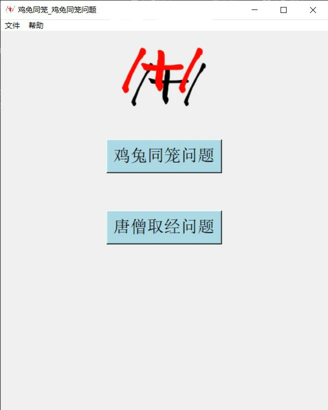

| 关于软件 |
| 关于张博洋的个人经历 |
| 关于京剧 |
| 软件源代码 |
| 时间 | 软件 |
|---|---|
| 2022 年 12月 20日 |
鸡兔同笼1.0
点击下载：32位系统安装程序64位系统安装程序 张博洋正式制作的第一个Windows软件 提示：此版本软件在下载和运行时，可能需要关闭Windows安全中心的实时保护功能 或者是把这个软件的文件夹 添加到病毒和威胁防护的排除项中 因为Windows系统会误以为我的软件中含有病毒 |
| 2023 年 1月 18日 |
鸡兔同笼2.0
点击下载：安装程序增加了GUI界面； |
| 2023 年 1月 29日 |
鸡兔同笼2.1  点击下载：安装程序更新 ： 增加了唐僧取经时间计算功能； 修复了一些已知问题. |
| 时间 | 事件 |
|---|---|
| 1905年 (光绪三十一年) | 我国第一部国产电影 京剧无声电影《定军山》 主演谭派创始人谭鑫培  |
| 20世纪30年代 | 抗战时期 麒派老生演员周信芳 为鼓舞民众爱国之心 创作京剧《徽钦二帝》《明末遗恨》 在上海演出,遭到禁演 《明末遗恨》录音来自1936年蓓开唱片 |
| 1937年 | 上海沦陷之后 周信芳在悲愤之中创作京剧《文天祥》 1938年首次演出遭到禁止 |
| 1937年10月（或1938年） | 剧作家田汉为“保卫大武汉” 创作京剧剧本《江汉渔歌》 （原名《渔父救国》） 1939年改编为大型京剧作品，改名《江汉渔歌》 高派老生李和曾录音 |
| 1962年 | 京剧电影《徐策跑城》 主演周信芳 和导演应云卫  |
| 1962年 | 周信芳舞台生活六十周年纪念活动 周恩来总理前去观看《打渔杀家》  |
| 1966年 | 马派老生创始人 马连良 死于 文化大革命 |
| 1975年 | 麒派祖师爷 周信芳死于 文化大革命 |
| 鸡兔同笼1.0 | 点击跳转至GitHub存储库 | TXT文件（ANSI编码) |
| 鸡兔同笼2.0 | 点击跳转至GitHub存储库 | TXT文件（ANSI编码) |
| 鸡兔同笼2.1 | 点击跳转至GitHub存储库 | TXT文件（ANSI编码) |
📭邮箱：youhulu2021@outlook.com
张博洋的GitHub： https://github.com/ZhangBoYaung